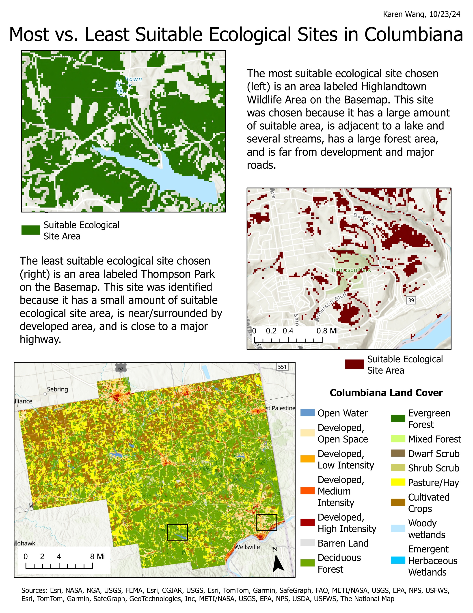

Most vs. Least Suitable Ecological Sites in Columbiana
Karen Wang
Description
This map compares the most and least suitable ecological sites in Columbiana County, Ohio. I used map algebra to create a model that selected areas based on criteria like proximity to water, distance from roads, low slope, and forest or wetland cover. The final output highlighted areas that met all requirements as suitable sites. I learned how to use ArcGIS Model Builder and apply Boolean logic in the raster calculator. I also liked learning about how spatial tools could be used to guide real-world land use decisions, and how it can be applied to ecological planning and conservation work.